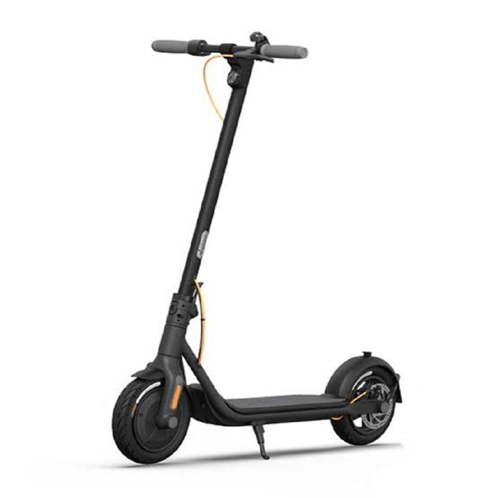
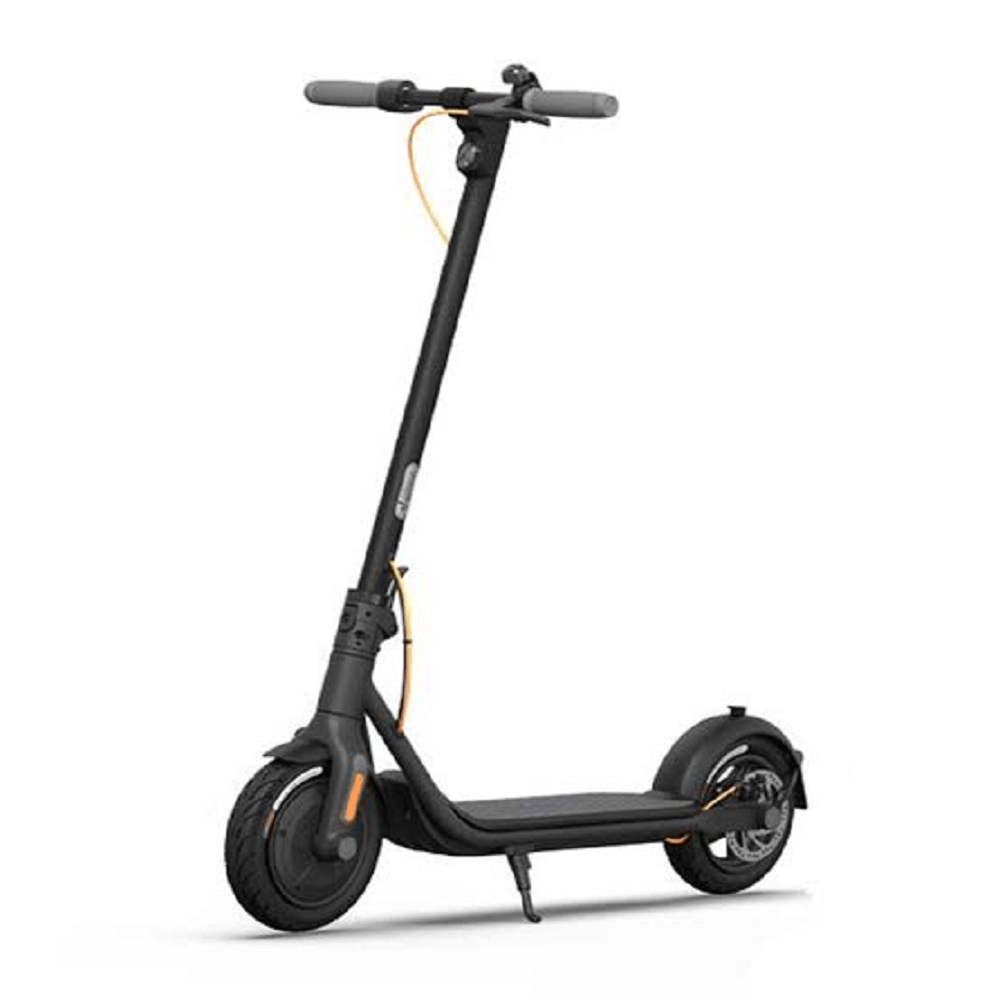

Descubre la movilidad del futuro en tu campus universitario con nuestros scooters eléctricos.
¿Listo para empezar? Utiliza un scooter ahora y disfruta de un viaje emocionante en minutos.
Explora másDescubre la movilidad del futuro en tu campus universitario con nuestros scooters eléctricos.
¿Listo para empezar? Utiliza un scooter ahora y disfruta de un viaje emocionante en minutos.
Explora másEn SQ San Marcos, ofrecemos scooter eléctrico moderno y eficientes para tu comodidad y movilidad en el campus universitario.
Velocidad máxima: 40 km/h
Autonomía de la batería: 4horas
Utilizar nuestros scooters eléctricos es simple y conveniente. Aquí te explicamos cómo:
¡Es así de fácil! Nuestro objetivo es proporcionarte una forma rápida y eficiente de desplazarte por el campus universitario. Si tienes alguna pregunta o necesitas asistencia, no dudes en preguntar a nuestro personal en los paraderos.
Somos SQ SAN MARCOS, una empresa comprometida con la movilidad sostenible y eficiente en tu campus universitario. Nuestra misión es proporcionar una alternativa de transporte ecológica y accesible para la comunidad estudiantil.
¡Únete a nosotros en nuestro viaje hacia un campus más sostenible y con mayor movilidad!